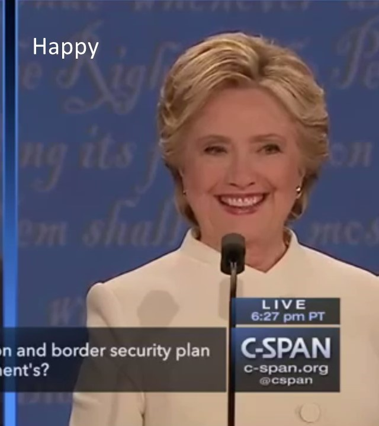
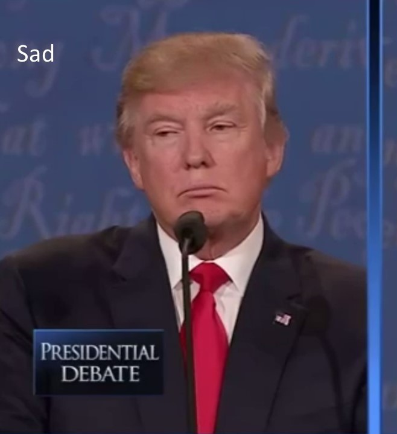
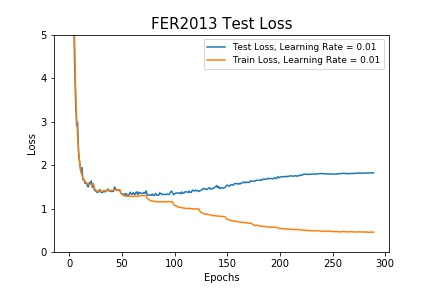

Davide Lucchi
Mona Jalal
Silvia Ionescu
12/7/2017
Given the video of a person classify the emotion that their face is showing in each frame. The algorithm will be applied to the videos of the 2016 presidential debate between Hillary Clinton and Donald Trump where each video shows only one candidate. Our target emotions are neutral, happy, sad, surprise, fear, disgust and anger.
Emotion recognition has many applications like smart home automation, self-driving cars, improving the classroom dynamics based on the students' emotions, and helping people with disabilities based on their perceived affections. Emotion/expression recognition is studied under the umbrella of affective computing as a way for the human-computer interaction (HCI) as well as human-robot interaction (HRI). Emotion recognition is one of the harder tasks in computer vision tasks spectrum with respect to achieved accuracy. The problem of emotion/expression recognition would be even harder when studied in other modalities like face sketches, face caricature and/or when special filters are applied that has deformed/malformed the face in a way detectable by a human and not probably a computer. Most of the efforts in the emotion recognition literature has been performed in normal human faces and only for a very few (7) emotions. Additionally, most of the research in the community has been geared towards winning the challenges for emotion recognition like EmotiW (Emotion Recognition in the Wild Challenge), DCER and HPE (Joint Challenge on Dominant and Complementary Emotion Recognition Using Micro-Emotion Features and Head-Pose Estimation), FERA (Facial Expression Recognition and Analysis Challenge), MEC ( Multimodal Emotion Recognition Challenge), EmotiW 5.0, and AVEC (Audio/Visual Emotion Challenge). All these challenges come up with their own dataset. Additional famous datasets for emotion recognition are FER2013, CK+, MMI facial expression database, KDEF and AffectNet. In this project, we worked with FER2013, KDEF and AffectNet datasets. Overall, what makes a good dataset depends on various factors like having exposure to colored images of various age groups, ethnicity groups, and genders besides having cleaned and organized labels. Indeed one of the datasets that we came across (EmotionNet) which included the Facial Action Units encoding for each image, was very hard to work with and needed substantial data cleaning time compared to the other three datasets we worked with. We would additionally like to bring the attention of those who make datasets available to researcher to how easy-to-access datasets need to be. We had quite our share of numerous challenges for retrieving the 120GB AffectNet dataset. Additionally, FER2013, which we assume is the most prevalent dataset in the field, has very low-resolution images many of which include watermark in the images. These watermark potentially can degrade the prediction accuracy of machine learning and deep learning systems.
EmotiW challenge goal is to provide a standard platform for emotion recognition. The first EmotiW (2013), brought the attention of researchers to emotion recognition in Acted Facial Expression in the Wild (AFEW). For example, the EmotiW 2013 winners used a deep neural network (DNN) method for detecting emotions. They used a convolutional neural network (CNN) for face analysis, bag of words method for analysing the mouth area, and use of deep belief networks for audio signal processing.In EmotiW 2015, a new emotion recognition challenge was introduced with the emerge of Static Facial Expression in the Wild (SFEW) database. SFEW database is extracted from AFEW database using a fiducial point-based clustering method. The EmotiW 2015 highest classification accuracy of 54% for AFEW and 62% for SFEW represents the needs for further research that needs to be done by the researchers in the field to improve the accuracy of emotion recognition. Reseachers have tried to improve the emotion recognition from various corners including enhancing the accuracy of face and face part detection which plays the most crucial role in emotion recognition, improving the head pose detection, as well as sorting out the problems with varied illumination, noise and lack of labeled data. The last problem has been focus of many recent works in which they have used crowdsourcing where they ask crowd-workers to label the face emotions in large amount as done in AffectNet. Some of the future meta-data that could be included in the datasets studied by researcher that could improve the accuracy of emotion recognition are as EEG, eye gaze estimation and eye gaze direction, and skin galvanic response. Moreover, recent attention has been geared towards group-level emotion recognition as in EmotiW 5.0 challenge in which they try to analyze the effect of a group of people in images.
Hillary Clinton and Donald Trump's Presidential Debate on October 19th, 2016
This dataset is given to us by Professor Margrit Betke's research group.
The video is modified so that the video is cropped in half so that we can see the individual candidates.
| Donald Trump | Hilary Clinton |
The output of the algorithm should be a set of scores of the emotion in the candidate's face. This scores represent the probability that the current espression is associated to that emotion. The scores are recomputed for each set of frames.
|  |  |
 |
 |
 |
 |
Facial expressions are one of the most important non-verbal ways that human beings convey internal emotion. This means that there have been significant efforts to develop reliable automated face expression recognition (FER) systems that can understand human emotion and can interact with humans more naturally. One of the main problems for these systems is the fact that they have to operate in uncontrolled environments where the scene lighting, camera view, image resolution, background, users pose can have significant variations. With the rise of deep learning systems and big data systems, we are now able to have training data in the order of 500k image samples which are precisely annotated using multiple Amazon Mechanical Turk crowd workers for each image. Having large training dataset helps us with being able to shoot for very deep neural networks that can learn new patterns and detect emotions while the conventional computer vision algorithms or shallow neural networks might fail.
There have been a few models developed to quantify facial expressions and behaviors:
Datasets of facial expressions in the wild have received a spacial attention due to the uncontrolled environment setting that FER systems have be applied to.
The Facial Expression Recognition 2013 (FER-2013) datatset was introduced in the ICML 2013 challenge [11]. The database was created using the Google image search API that matched a set of 184 emotion-related keywords to capture the six basic expressions as well as the neutral expression. Images were resized to 48x48 pixels and converted to grayscale. Human labelers were used to reject incorrectly labeled images and filter out some duplicate images. The resulting database contains 35,887 images most of which are in the wild settings (collected from all over the Web). The downside of the FER-2013 dataset is that the faces are not registered, and only a small number of images portray disgust (547 images) hence the emotion distribution is not close to uniform, facial landmark detectors fail to extract facial landmarks at this resolution and quality. Winner of the FER challenge obtained a 71.2% accuracy on the test set by using CNNs with linear one-vs-all SVM classifier at the top.
The FER-Wild database [2] contains 24,000 images that were obtained by searching emotion-related terms from three search engines. The OpenCV face recognition was used to detect faces in the images, and 66 landmark points were found. Human labelers were used to annotate the images into six basic expressions and neutral. Compared with FER-2013, FER-Wild images have a higher resolution with facial landmark points necessary to register the images. Still the downside of this dataset is that few samples express disgust and fear and only the categorical model of affect is provided with FER-Wild.An accuracy of 80% was obtained for the FER-Wild dataset by training using AlexNet.
AffectNet[3] is a large database containing more than 1M facial images collected from the Internet by querying three major search engines using 1250 emotion related keywords in six different languages. Half of the retrieved images (~440K) were manually annotated for the presence of seven discrete facial expressions (categorial model) and the intensity of valence and arousal (dimensional model).
Support Vector Machines (SVMs) and Convolutional Neural Networks(CNNs) were applied to the three datasets listed below. Action units were extracted from the KDEF and FER-2013 datasets and Support Vector Machines(SVM) was applied for classification. Convolutional Neural Networks (CNNs) were applied to Fer-2013 AffectNet.
| DataSet | Source | # of Images | Condition | Categories | KDEF | 4900 | Controlled/Posed | 7 emotions |
| FER-2013 | ICML 2013 challenge [1] | 35,887 | Wild | 7 emotions |
| AffectNet | Mollahosseini/Hasani/Mahoor[2] | 450,000 | Wild | 7 emotions |
Support Vector Machines (SVM) are deterministic supervised learning models used for classification. SVM classifies data by finding the best hyperplane that separates two classes while maximizing the margin between the two classes. The SVM optimization problem is shown below, where w is the weight vector, b is the bias and i = 1; ::;N
 |
Convolutional Neural Networks(CNNs) architecture implemented was a VGG16 as shown below. The convolutional layers apply 3x3 filters to the images with the number of filters varying per layer, maxPooling layer has a pool size of 2, and the fully connected layer has a size of 512. Dropout layers of 0.4, batch normalization, and l2 regularization were applied to each convolutional layer.
 |
We are using a machine with two Nvidia 1080Ti GPUs and Intel Core i7 CPUs with 4TB of HDD and 1TB of SSD and 64GB of RAM. For the software pack, we are using pure tensorflow Python API as well as Keras API in Python with tensorflow backend. We also will use the Nvidia Tesla P100 and Nvidia Tesla k40 GPUs from SCC cluster that is reserved for the course after finalizing our code. Additionally, we are currently experimenting with OpenFace [8] for face detection and face landmark detection. The image below shows OpenFace demo running in Docker. We also have it in our plan to use the facial action unit (AUs) that reflects the facial muscle movements which is very important in emotion recognition. AUs aim to provide features that are complementary to CNN features [7]. We additionally, plan to add to experiment with LSTM-based RNNs for emotion recognition because the nature of emotion video segment is a temporal sequence.
 |
For this part we started with a baseline SVM code that detects emotion based on 68 facial landmarks. We tweaked this SVM and fed the facial action units to it. The Action Units were extracted with OpenFace from the datasets FER2013 and Karolinska Directed Emotional Faces (KDEF). The KDEF dataset consists of 4900 pictures of 70 individuals each displaying 7 different emotional expressions. Each expressions is photographed from 5 different angles. The fact that the debate images have high resolution and that the candidates are for most of the time facing the camera under good lighting conditions suggest that a wild dataset is probably not needed to obtain a good emotion prediction accuracy and a simpler dataset like KDEF could be helpful enough. The AU output of OpenFace consists of a set of occurences and intensities one for each of the AU that OpenFace is able to recognize. You can refer to the Appendix section for an elaborate visualization of AUs and their relation to emotions. For some of the images given the position of person's face, it was not possible to calculate the AUs. This happened usually on side pictures where OpenFace was not able to recognize the face. This reduced even more the size of the dataset which in the end was 3022 images. The same problem occurred with the FER2013 dataset for which it was possible to generate only 5200 images. The reason about this is that the low-resolution of small size (48x48 pixels) images made it more difficult for OpenFace to generate the AUs and when this was not possible, no output file was created. For each dataset image the AUs were computed and the intensities and occurences values were put in a vector. The SVM training data consisted of a matrix with such vectors. The SVM used is a Support Vector Classification (SVC) from Python sklearn library with a rbf (radial basis function) kernel and ovr (One Vs Rest) classifier. The training and validation data were generated with the function train_test_split from sklearn in order to have a random sample.
One every four frames was extracted from each input video and for each of them the SVM models were used to predict the emotion in that frame. The following tables illustrate the predictions obtained over a sample of 1372 frames from the debate.
|
Trump
|
Hilary
|
The predictions highlight the differences and similarities between the two models. In particular, for Trump the biggest disagreement was between sad and angry. The FER model in fact interpreted most of the non neutral expressions as sad while the KDEF as angry. A few of such frames are shown below.
 |
 |
 |
 |
 |
 |
 |
The FER-2013 dataset consists of 35,887 images that are queried from the web. The data consists of 48x48 pixel grayscale images of faces. The faces have been automatically registered so that the face is more or less centered and occupies about the same amount of space in each image. The task is to categorize each face based on the emotion shown in the facial expression in to one of seven categories (0=Angry, 1=Disgust, 2=Fear, 3=Happy, 4=Sad, 5=Surprise, 6=Neutral). The training set consists of 28,709 examples and test set has a size of 3,589 examples.
For the FER-2013 dataset, the VGG16 architecture was implemented using Keras with tensorflow backend. This architecture was tested with both data augmentation and without using Keras ImageDataGenerator. Our accuracy results increased from 60% to 65% with the data augmentation, therefore we continued to use data augmentation for our next optimization section. We used a rotation_range=15, width_shift_range=0.1, height_shift_range=0.1 for the data augmentation parameters.
Four different learning rates were tested(0.1, 0.05, 0.01, 0.005) over 200 epochs as shown below. As we can see the accuracy increases as the learning rate decreases to 0.001.
 |
Adding a 0.5 dropout layer after each convolution layer was tested. As we can see below after 200 epochs the dropout layer and non-dropout layer reach the same accuracy of 68%, however the loss for the dropout layer performs better, therefore we used a 0.5 dropout layer in our architecture.
 |
 |
We also tried decreasing the learning rate every 25 epochs by 2, starting with a learning rate = 0.1, while using a 0.5 dropout, batch normalization and l2 regularization at each convolution layer as shown below. For this layout our test accuracy reached 68.5%.
|  |
For AffectNet, we also tried using RGB images for training the CNN network. In order to speed up the training process, we pulled 37k and 64k images form the 8 classes and tested 2 different learning rates. The results for the RGB images are shown below on the right and it gave us a test accuracy of 55%.
For AffectNet,
 |
 |
 |
 |
| Action Unit | Description | Facial Muscle | Example |
| 1 | Inner Brow Raiser | Frontalis, pars medialis |  |
| 2 | Outer Brow Raiser (unilateral, right side) | Frontalis, pars lateralis |  |
| 4 | Brow Lowerer | Depressor Glabellae, Depressor Supercilli, Currugator |  |
| 5 | Upper Lid Raiser | Levator palpebrae superioris |  |
| 6 | Cheek Raiser | Orbicularis oculi, pars orbitalis |  |
| 7 | Lid Tightener | Orbicularis oculi, pars palpebralis |  |
| 9 (also shows slight AU4 and AU10) | Nose Wrinkler | Levator labii superioris alaquae nasi |  |
| 10 (also shows slight AU25) | Upper Lip Raiser | Levator Labii Superioris, Caput infraorbitalis |  |
| 12 | Lip Corner Puller | Zygomatic Major |  |
| 14 | Dimpler | Buccinator |  |
| 15 | Lip Corner Depressor | Depressor anguli oris (Triangularis) |  |
| 17 | Chin Raiser | Mentalis |  |
| 20 | Lip stretcher | Risorius |  |
| 23 | Lip Tightener | Orbicularis oris |  |
| 25 | Lips part | Depressor Labii, Relaxation of Mentalis (AU17), Orbicularis Oris |  |
| 26 | Jaw Drop | Masetter; Temporal and Internal Pterygoid relaxed |  |
| 28 | Lip Suck | Orbicularis oris |  |
| 45 | Blink | Relaxation of Levator Palpebrae and Contraction of Orbicularis Oculi, Pars Palpebralis. |  |
Each emotion can be associated to a set of AUs. Some examples are given in the table below.
| Emotion | Action Units | Description | Examples (Hover to Play) |
| Happiness / Joy | 6 + 12 | Cheek Raiser, Lip Corner Puller |
|
| Sadness | 1 + 4 + 15 | Inner Brow Raiser, Brow Lowerer, Lip Corner Depressor | 
|
| Surprise | 1 + 2 + 5 + 26 | Inner Brow Raiser, Outer Brow Raiser, Upper Lid Raiser, Jaw Drop |
|
| Fear | 1 + 2 + 4 + 5 + 7 + 20 + 26 | Inner Brow Raiser, Outer Brow Raiser, Brow Lowerer, Upper Lid Raiser, Lid Tightener, Lip Stretcher, Jaw Drop |
|
| Anger | 4 + 5 + 7 + 23 | Brow Lowerer, Upper Lid Raiser, Lid Tightener, Lip Tightener |
|
| Disgust | 9 + 15 + 16 | Nose Wrinkler, Lip Corner Depressor, Lower Lip Depressor | 
|
| Contempt | 12 + 14 (on one side of the face) | Lip Corner Puller, Dimpler | 
|